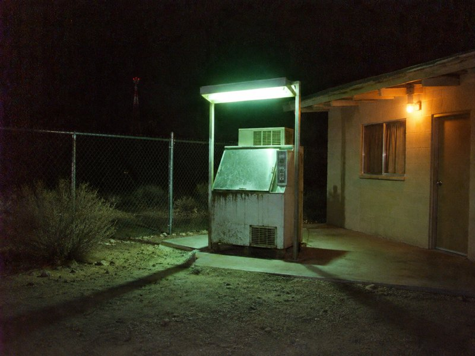

The motel ice machine is on line two


Night clerk’s statement
Night clerk Mae Vale shut the lobby at midnight. She put the phone in the office safe after a caller tried to book all eight rooms in the name of his dog. At 2:13, KDAR’s incoming line displayed the motel number. Clem picked it up. On tape, something clattered against galvanized steel.
“I had the night key and an empty bucket. When I put the bucket down, the ice machine quit rattling. When I moved it, Clem said he could hear me again. I’ve given people wake-up calls for eleven years. This was my first one from an appliance.”
— Mae Vale, night clerk
The night desk checks its work
Engineer Len Rusk visited the vending alcove carrying a continuity tester, a pocket radio and a lemon-lime soda. The machine has one power cord, one water line and a label that says GUESTS ONLY. Len rented Room 3 so he could continue the test.
The green tube over the machine was on its own circuit. Switching off the amber porch bulb made no difference to the line. Len’s photograph shows both lights on. The red dot over the fence is our tower.
The first two rings on our reel came through the board before Clem brought up the channel. According to Len, a compressor can throw noise back down a power line. It would still have to know our area code.
Tape 017 · listen and read the transcript
Disposition
Len left a bucket under the chute overnight. As of this morning it contains two dimes, a motel key and a quarter pint of water. The day manager wants the key back.